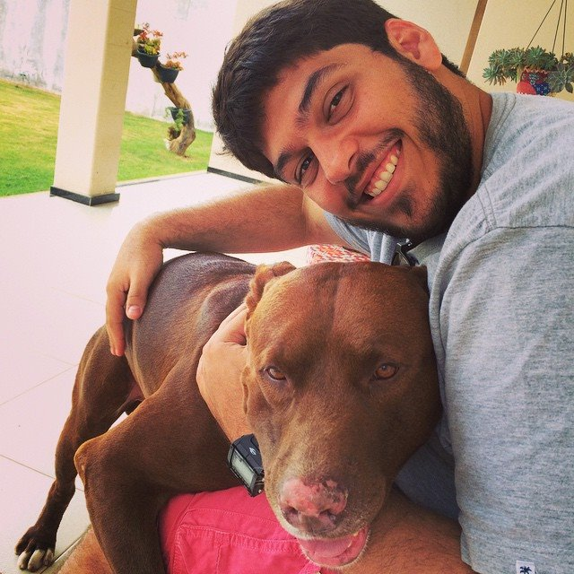

Sobre
Barcode é um evento criado para que profissionais da área de TI possam ficar longe do teclado por um tempo, beber cerveja, assistir palestras curtas e, claro, trocar aquele bom papo nerd. Quer falar sobre Android, iOS, Ruby, Python, Javascript, Node, Go, C#, PHP, Java, Scala, Scrum, Design etc? Venha para o evento, pegue uma cerveja (ou café se você for mocinha) e mãos na massa!
O evento acontece nas terceiras quintas-feiras de todo mês e faz parte do calendário do Caju Valley. Não deixe de conferir nossa página no facebook.
Local
Av Ivo do Prado, 734 - São José. Aracaju, Sergipe
Inscrições
Caso não esteja conseguindo fazer a inscrição clique aqui
Palestrantes
-

17h00 Construindo APIs com o Grape
Breno Moura
Entusiasta Ruby e desenvolvedor Ruby e Ruby on Rails há 2 anos, Breno atualmente desenvolve aplicações back end e apis de integração na Jaya Apps.
-
17h30 Git branching: uma sugestão de modelo para controle de versão de seus projetos
Erick Mendonça @erickmendonca
Erick Mendonça é formando na Universidade Federal de Sergipe e possui experiência como desenvolvedor e analista de sistemas. Co-organizador do Google Developer Group Aracaju, busca compartilhar conhecimento e aperfeiçoar a comunidade local de desenvolvedores e empreendedores através de eventos técnicos e encontros descontraídos para incentivar o crescimento e a empatia da comunidade local.
-
18h30 Introdução ao Ruby on Rails (da criação do projeto ao deploy no Heroku).
Thiago Guimarães
Trabalho com desenvolvimento a 6 anos e a 2 anos e meio com Ruby. Atualmente trabalho remotamente como Ruby Developer na QuezMedia e estudante do quinto período de SI. Idealizador do nossolixo.com.br
-
19h00 Estágios iniciais da formação de um time: fingimento e atrito
Alércio Bressano @alercio
GoLife!!
Agenda - Barcode #2 - 22/01
A programação muda todo mês. A programação da próxima edição é:
| Time | Slot | Description |
|---|---|---|
| 16h00 | Chegada da galera sóbria | - |
| 17h00 | Construindo APIs com o Grape Jaya Apps | Hoje é (quase) impossível vivermos na web e não utilizamos uma API direta ou indiretamente. Grape é um framework feito em Ruby que ajuda a escrever APIs de uma forma muito simples |
| 17h30 | Git branching: uma sugestão de modelo para controle de versão de seus projetos GDG Sergipe | Uma sugestão de modelo para controle de versão de seus projetos |
| 18h00 | Pausa para comer e beber! Importante, né? | - |
| 18h30 | Introdução ao Ruby on Rails (da criação do projeto ao deploy no Heroku). Quéz Media Marketing | Essa é para você que ainda acha que ruby é apenas uma pedra preciosa |
| 19h00 | Estágios iniciais da formação de um time: fingimento e atrito GoLife | Vamos debater sobre os desafios dos estágios iniciais da formação de equipes de alta performance. |
| 19h30 | Comida, bebida e bate-papo informal | - |